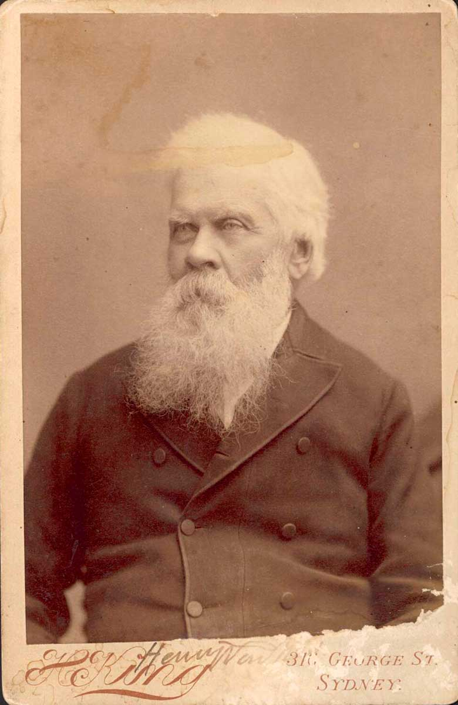

Democracy Sausage Help - Matching Activity (15 minutes)

Match the term to its definition by clicking a term and then a definition.
Correct matches: 0 / 5
Week 1 - Lesson 1: The Australian Constitution (~60 minutes)
Reading (15 minutes): Read the provided excerpt from your materials about the Australian Constitution and how it established the federal system.

Sir Henry Parkes (1815–1896) was five-time Premier of New South Wales and the driving force behind Federation. His Tenterfield Oration in 1889 is widely regarded as the spark that led to the creation of the Commonwealth of Australia.
Harold Holt was the 17th Prime Minister. He mysteriously disappeared while swimming in 1967...
The Federation of Australia was not only a political event. It was also a legal act. The video explains how the six British colonies moved from separate colonial governments to one Commonwealth of Australia. The Australian Constitution is the rulebook that made that new Commonwealth possible. It created a national Parliament, executive government and federal courts, while also protecting the continued existence of the states (Commonwealth of Australia Constitution Act 1900).
By the late nineteenth century, the colonies already had their own parliaments and local identities. Federation was attractive because some problems were becoming too large for separate colonies to manage well: defence, immigration, customs duties, trade between colonies, and national infrastructure. However, the colonies were not simply surrendering power to a new central government. The Constitution was drafted as a compromise between unity and state independence. La Nauze (1972) describes constitution-making in the 1890s as a process of argument, negotiation and practical problem-solving rather than a single burst of national enthusiasm.
This matters because the Constitution still carries the marks of that compromise. Australia became one nation, but not a unitary one. It became a federation: a system in which power is divided between a national government and state governments. The Constitution therefore answers two linked questions: What should the Commonwealth be allowed to do? What should remain with the states?
A Short Rulebook, Not a Complete Manual. The Australian Constitution is surprisingly short. It does not explain every convention, tradition or expectation in Australian politics. Instead, it sets out the main institutions and powers of government. Quick and Garran (1901), writing soon after Federation, treated the Constitution as both a legal text and a political settlement. That is a useful way to read it: it is law, but it also reflects the hopes, fears and bargaining of the people who drafted it.
Chapter I establishes the Parliament. Section 1 places legislative power in the monarch, the Senate and the House of Representatives. In practice, the monarch is represented federally by the Governor-General. The House of Representatives is designed to reflect population, while the Senate gives equal representation to the original states. This structure shows the federal bargain. More populous states gained influence in the House, while smaller states received equal state representation in the Senate.
Chapter II deals with executive government. It refers to the Governor-General, the Federal Executive Council and ministers. However, it does not fully spell out how the Prime Minister and Cabinet operate. Much of that depends on responsible government, a convention inherited from Britain. Responsible government means ministers must be answerable to Parliament, and the government must be able to maintain the confidence of the House of Representatives. This is why a Constitution can be written and still depend on unwritten rules.
Chapter III establishes the federal judicature, including the High Court of Australia. The High Court has a special constitutional role: it decides disputes about the meaning of the Constitution and whether laws are valid. This is one reason constitutional law remains alive. The words written in 1900 continue to be interpreted when new disputes arise.
Federalism: Dividing Power. One of the most important parts of the Constitution is section 51, which lists many areas where the Commonwealth Parliament may make laws. These include subjects such as taxation, defence, external affairs, marriage, immigration and trade with other countries or among the states. Powers not given to the Commonwealth generally remain with the states. This is why states still make laws about many areas of daily life, including criminal law, hospitals, schools, roads and local government.
The division is not always neat. Sometimes both the Commonwealth and a state pass laws about the same issue. Section 109 provides that when a valid Commonwealth law is inconsistent with a state law, the Commonwealth law prevails to the extent of the inconsistency. This does not erase the state law completely, but it stops it operating where the conflict exists. In classroom terms, this is a constitutional tie-breaker.
Over time, the High Court's interpretation of Commonwealth powers has affected the balance between the Commonwealth and the states. Selway and Williams (2005) argue that High Court decisions have helped shape the practical development of Australian federalism, often reflecting broader political and historical changes. This does not mean the High Court simply rewrites the Constitution. It means that interpretation matters. A short phrase, such as the external affairs power, can have major consequences when applied to modern problems.
Rights, Limits and the Role of the People. Unlike the United States Constitution, the Australian Constitution does not contain a broad national bill of rights. It contains some express protections, including trial by jury for certain Commonwealth offences, freedom of religion, and just terms for Commonwealth acquisition of property. It also contains structural protections, such as representative government, federalism and judicial review. Aroney et al. (2015) emphasise that the Constitution needs to be understood through its text, structure and historical setting, not only through isolated sections.
The people also have a direct role in constitutional change. Section 128 says that the Constitution can only be altered by referendum. A proposed change must generally be approved by a national majority of voters and by a majority of voters in a majority of states. This is called a double majority. The rule makes constitutional change difficult. According to the Parliamentary Education Office (n.d.), only eight of forty-five proposed changes have succeeded since the first federal referendum in 1906.
There are good reasons for making change difficult. The Constitution is meant to be stable, and a referendum ensures that politicians cannot alter the basic rules of government by ordinary legislation. However, the difficulty also creates debate. Some people see it as protection for democracy and the states. Others argue that it makes necessary reform too hard, especially when public understanding of constitutional detail is limited.
Why the Constitution Still Matters. The Australian Constitution matters because it explains who can exercise public power and what limits apply to that power. When Parliament makes a law, the first constitutional question is whether that Parliament had power to make it. When governments act, conventions of responsible government help explain how they should remain accountable. When courts decide constitutional cases, they influence the working relationship between the Commonwealth, the states and the people.
The video shows Federation as the moment Australia joined together. The Constitution shows what joining together actually required: a written legal framework, democratic approval, British enactment at the time, state protection, national institutions, and a way to resolve disputes. It is not just a historical document kept behind glass. It is the operating system of Australian government.
Match the term to its definition by clicking a term and then a definition.
Correct matches: 0 / 5

Flip cards to match key words and definitions. Find all 5 pairs!
Pairs found: 0 / 5
1. Why did the colonies want a national government, but still want to protect state power?
2. Which part of the Constitution seems most important: Parliament, executive government, the High Court, federalism, or referendums? Explain your choice.
3. Is the double majority referendum rule a strength or a weakness of Australian democracy?
4. How does the Constitution show that Australia borrowed ideas from Britain but also adapted them for a federal system?